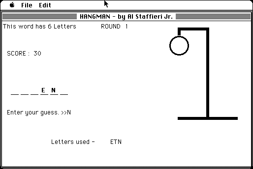

Download
HANGMAN.zip (57K) HangMan 1.6 - 68K repackaged into a zipped hfs disk image and checksum file. The disk image can be mounted with Mini vMac.
HANGMAN.sit (57K) HangMan 1.6 - 68K in the original format.
copyright: Al Staffieri Jr.
mod date: Apr 6, 2003
license: Freeware
official url :
Al's Older Macintosh Software
Has "over 2000 words, keeps track of top 10 high scores, and has a Tournament option". For "System 6.0.3 or later".

If you find these downloads useful, please consider helping the Gryphel Project, which hosts them.
Here are the md5 checksums for the downloads, signed with Gryphel Key 5:
--------- GRY SIGNED TEXT --------- c878ec64c3803ed09cc2db7879973dc9 HANGMAN.zip 62f5b78a8b2e8113f7ab3aac0d91a9ef HANGMAN.sit ------- BEGIN GRY SIGNATURE ------- Gry/4Xa8CFcUzxdN/HqsUJF8VoIB91+/ZGiV9kMWaPof4n78Q7KwCDnUiQ0XMIXi NlAyRmiFzQ04HfjkGTM2T3NI6HoyqgwC8wTvpLIiGXGYmHLijKLLXM/A0a8/PTf3 tQf1CZRzC+5Z+3TsjE7MrGxYN4EBD8rWSNjPeVkwKYepR1dbKeU75f1zAsun1W1H -------- END GRY SIGNATURE --------